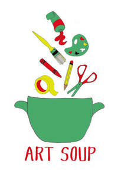

Trade Mark Journal No.2026/006 6 February 2026
UK00004327659 21 January 2026 (41)

- Class 41
- School services for the teaching of art; Tutoring; Education academy services for teaching art history; Art gallery services; Gallery services (Art -); Art exhibition services; Art exhibitions; Educational and instruction services relating to arts and crafts; Conducting workshops and seminars in art appreciation; Conducting of workshops and seminars in art appreciation; Providing education in the field of art rendered through correspondence courses; Education in the field of art rendered through correspondence courses; Cultural, educational or entertainment services provided by art galleries; Education services relating to painting; Painting instruction; Instruction in the field of the visual arts; Teaching academy services; Education services related to the arts; Providing of training, teaching and tuition; Educational and teaching services; Teaching services; Education services relating to photography; Photography instruction; Kindergarten services [education or entertainment]; Teaching services relating to pedagogy techniques; Education, teaching and training; Arranging of competitions for education or entertainment; Entertainment, education and instruction services; Education and instruction services; Arranging and conducting of competitions [education or entertainment]; Organizing cultural and arts events; Workshops for cultural purposes; Conducting courses, seminars and workshops; Arranging of workshops and seminars; Workshops for educational purposes; Organising of education seminars; Arranging of workshops; Arranging and conducting of seminars and workshops; Arranging and conducting of workshops and seminars; Workshops for recreational purposes; Arranging of exhibitions for cultural or educational purposes; Organisation of exhibitions for cultural and educational purposes; Organisation of exhibitions for cultural or educational purposes; Educational demonstrations; Exhibitions (Conducting -) for cultural purposes; Teaching.
Victoria Bishop